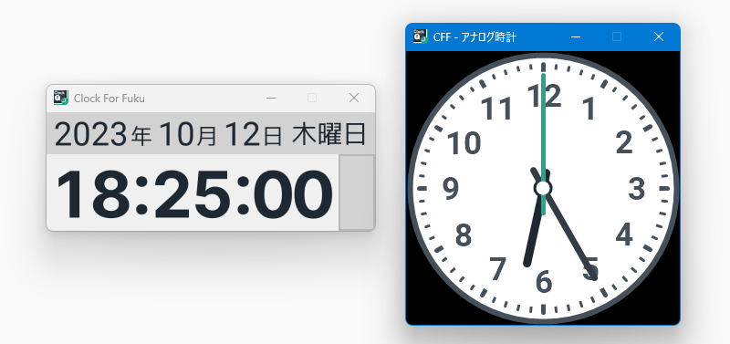
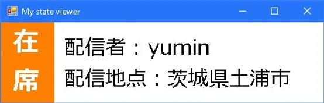
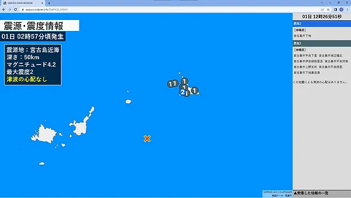
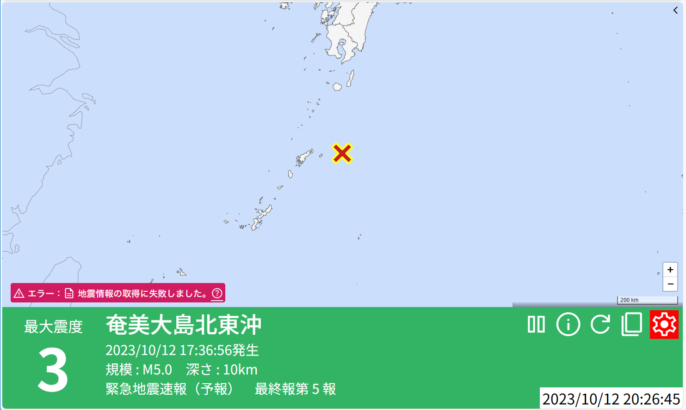
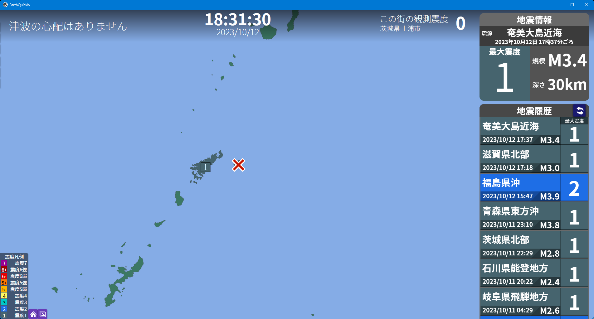
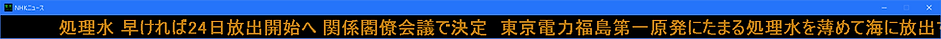
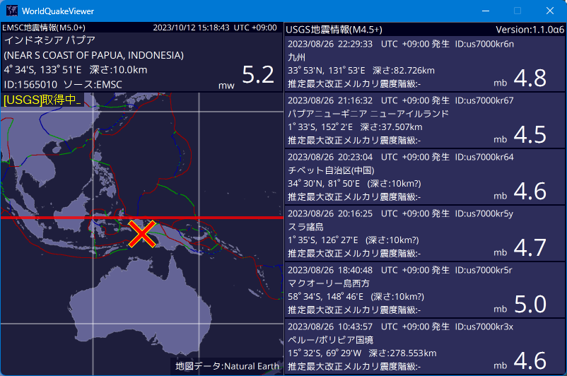
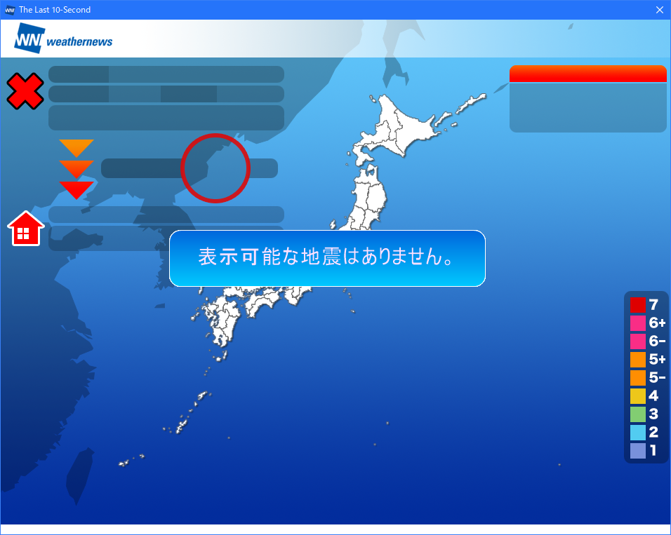
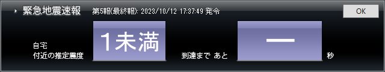

使用ソフト一覧
※このサイトに記載されているソフトウェア・サイト等はyuminの配信画面上にあるものです。
※このサイトに添付されている画像上に表示されている情報は現在のものではありません。
Quarog
Fuku1213様

ClockforFuku
Fuku1213様
※現在配布を中止しています。
MyStateViewer
れんちょん様
QWPASS
はち様
RealtimeQuakeinfoforyuminQuakelive
MiyakojimaCam様
EarthQuickly
あめうま様
電光ニュース
JurakuSoftware様
WorldQuakeViewer
いちはい様
TheLast10-Second
ウェザーニュース株式会社様
このソフトを使用するにはウェザーニュース会員（月額330円）に加入する必要があります。
緊急地震速報アラーム+
このソフトを使用するにはTheLast10-Second（有料）が必要です。
yumin地震観測所 - 事務部情報課
Tweets by YQL_infomentionFollow @twitter